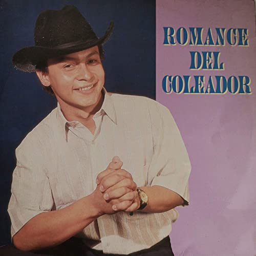

INFORMACION HISTORICA

- No fue precisamente hace quince años que WALTER SILVA cantara joropo por primera vez,
habrá que sumarle otros cinco años por lo menos en los bailes de año nuevo en Curimina.
- En 1990 la promoción de bachilleres del colegio Rafael Uribe Uribe de Pore-Casanare, un festival
municipal de joropo en el cual Walter Silva resultó cantando, ganando y conociendo acerca de la música.
- Al finalizar el año 1991, en Villanueva –Casanare, se realiza el festival “Alma sabanera” y con la primera
canción que Walter Silva escribió llamada “Romance del Coleador”.
- se hizo ganador de su primero y único evento como tal. Después concursaría dos o tres veces más y al no encontrar
éxito en ello declinó de la parte competitiva.
- En el año 1993 WALTER SILVA se retira casi forzadamente del colegio de Pore y continúa su año escolar en el Braulio
González de Yopal.
- En el año 1993 graba la canción que no ha pasado de moda a la presente.” Dónde andará mi muchacha”.
https://www.buenamusica.com/walter-silva/biografia